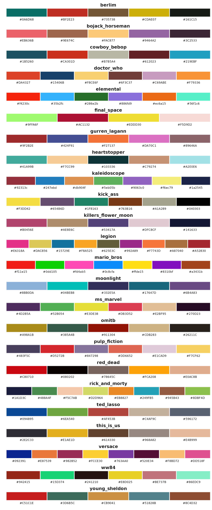

Functions pal_
functions_palette.Rmdpal_ functions provides color schemes that are
influenced by popular culture media, such as: TV series, movies, video
games, animations, etc.
pal_div
The goal of pal_div is to return a palette for a
divergent scale, with the following palettes:
pal_qua
The goal of pal_qua is to return a palette for a
qualitative scale, with the following palettes:
